1
Show the source
An answer is only useful if it can be checked, so the citation and the highlighted fragment are always one click away.
An internal AI workspace for long, confidential lease documents. It answers questions, extracts the key terms and shows the exact page and paragraph behind every answer, so the team checks answers instead of rereading the lease.
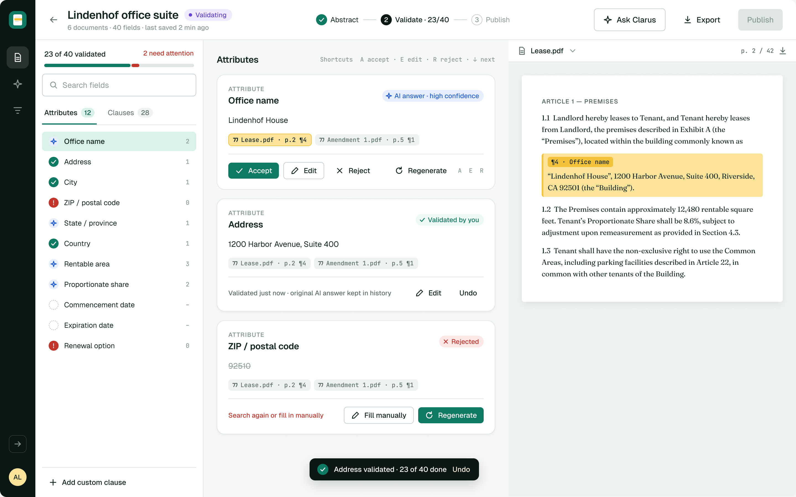
Compliance rules meant the team couldn't use external AI services or upload lease documents to the internet. The business asked for its own internal tool to find information in leases quickly, extract the key data and prepare it for analysis.
It had to be a workspace, not just a chat: the document and the AI conversation side by side, several documents in one chat, and every answer pointing to the place in the lease it came from. The end goal was a new document built from answers the user had checked.
The project is under NDA. Clarus is the name this case study uses, and the brand, screens and data on this page are a redesign I made for the portfolio. The product logic is the real one; lease names, addresses and numbers are invented.
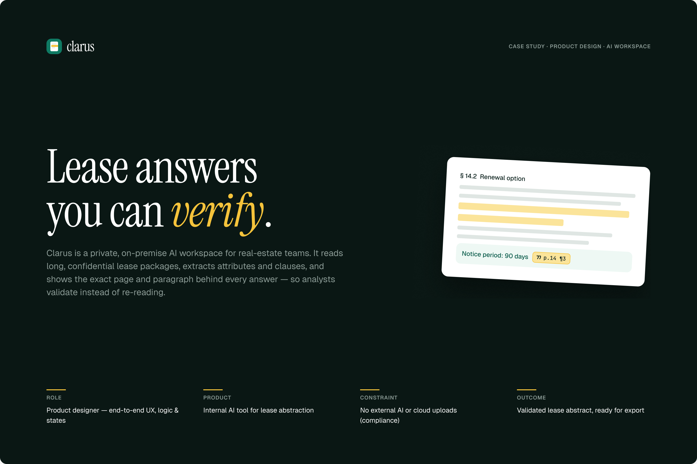
As the product designer I owned the experience end to end. Most of the work wasn't visible on the happy path: it was the logic of how the product behaves when something is missing, wrong or not allowed.
The users weren't AI experts. They shouldn't need to know how the model works, where data is stored or how an answer is put together. They upload a lease, ask a question, see the answer with its source, check it and move on.
An answer is only useful if it can be checked, so the citation and the highlighted fragment are always one click away.
The AI drafts; the person accepts, edits or rejects. Nothing goes into the final document without that step.
What a user can do depends on where the lease is in its lifecycle, so the interface only offers actions that are allowed right now.
The main flow: pick a lease, check what the AI extracted against the document, ask follow-up questions and export the result. These screens are the portfolio redesign of that flow.
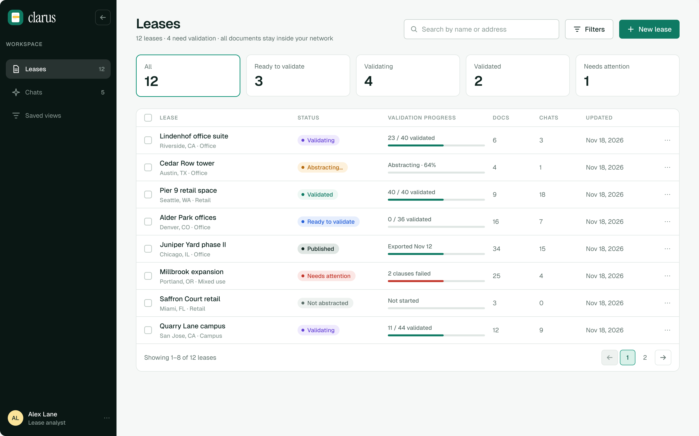
Every lease with its status in plain words and how many fields are validated. The tiles on top filter the list by status.
Fields on the left, one card per answer in the middle, the document on the right. Each card shows its citations; clicking one highlights the fragment in the lease.
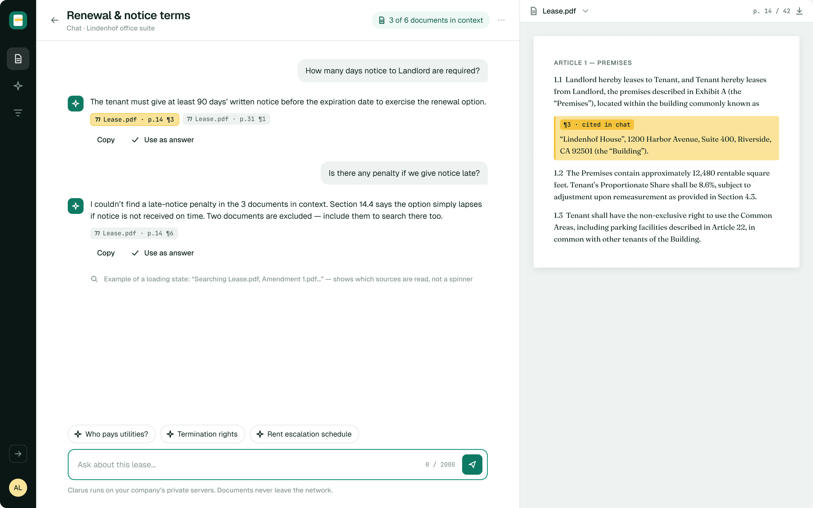
Free questions across all documents in the chat. Answers carry the same citation chips as the fields, so a chat answer is checked the same way.
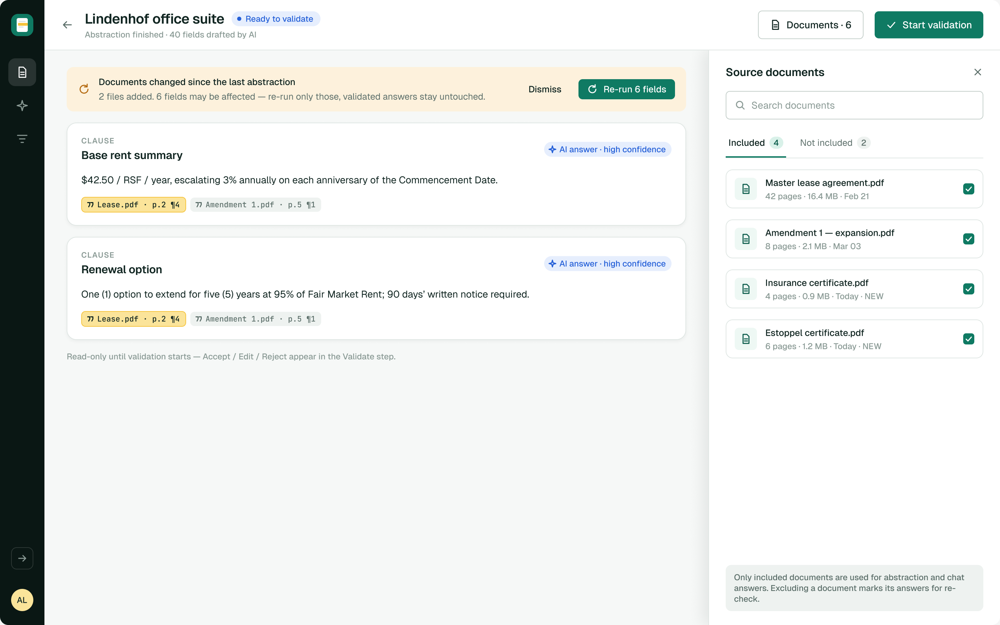
When a document is added or removed, only the fields it affects go back to review. Answers the user already validated stay.
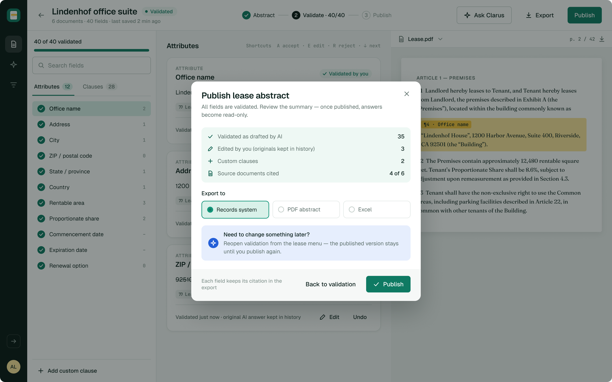
Once every field is validated, a summary shows what goes out and where: the records system, a PDF abstract or Excel. Each field keeps its citation in the export.
A lease moves from abstraction to validation to export, and each status allows a different set of actions. I mapped the lifecycle, the exceptions and the actions for every status before drawing screens, because a change in one place had to be traced through the rest of the flow.
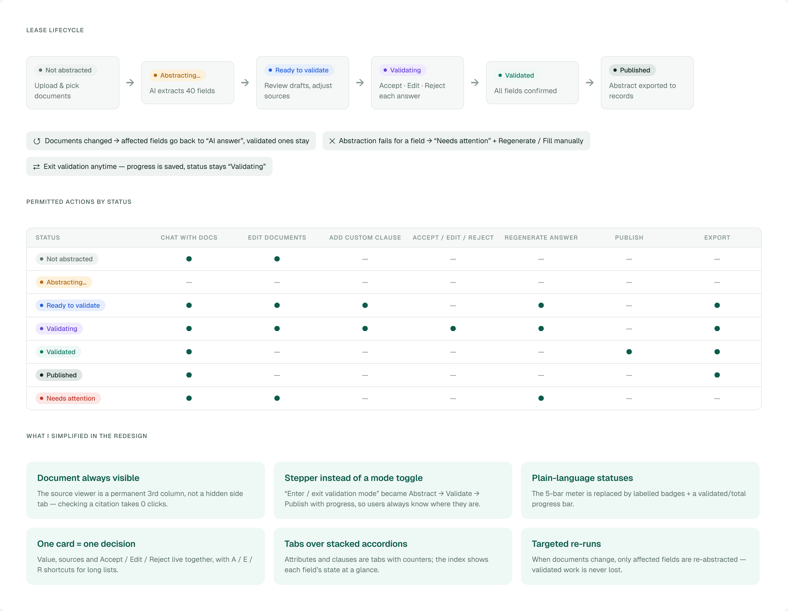
Six statuses, the exceptions between them, and which actions each one allows: chat, edit documents, add a custom clause, accept or reject, regenerate, publish and export.
Entering and leaving "validation mode" became Abstract → Validate → Publish with progress, so users always know where they are.
The source is a permanent third column rather than a panel to open, so checking a citation takes no extra step.
Value, sources and Accept / Edit / Reject live together, with keyboard shortcuts for long lists of fields.
Labelled badges and a validated-of-total bar replace a meter users had to decode.
Users couldn't freely add, delete or edit attributes and clauses, and input had to be validated before AI work started. Each state says what happened and what to do next.
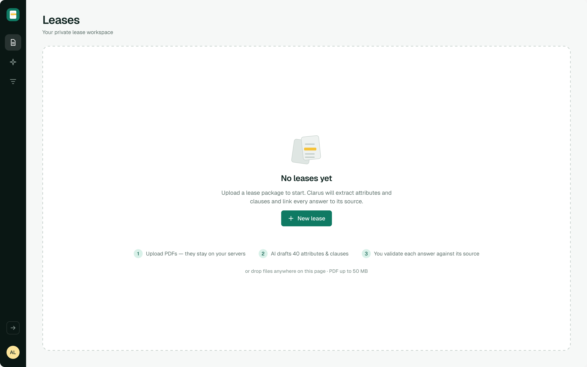
No leases yet: one place to drop files and three steps that explain the flow before anything is uploaded.
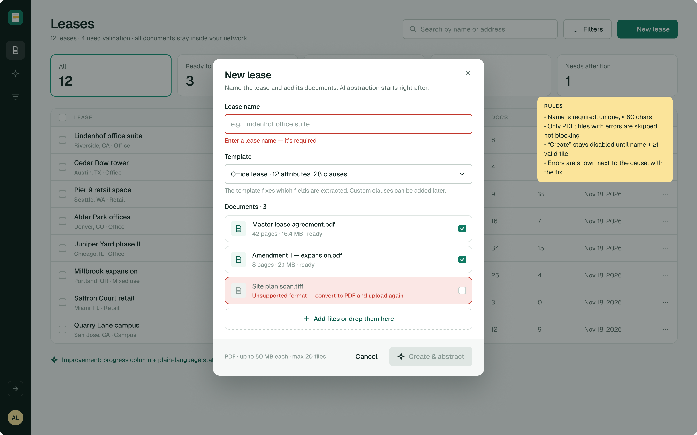
Errors sit next to their cause with the fix. A file in the wrong format is skipped, not blocking, and Create stays disabled until there's a name and at least one valid file.
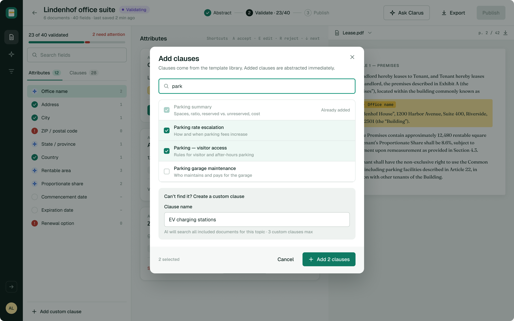
Clauses come from a library; ones already in the lease can't be added twice. A custom clause is possible, within a limit.
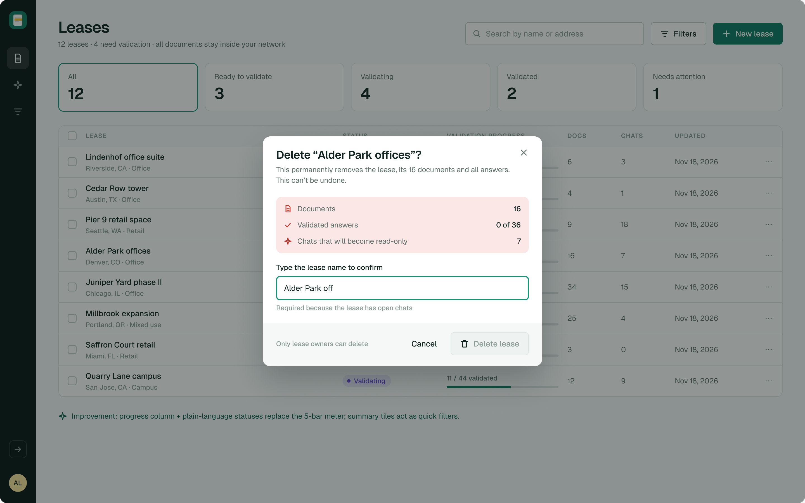
The dialog lists what will be lost. Typing the lease name confirms it, and only the lease owner can delete.
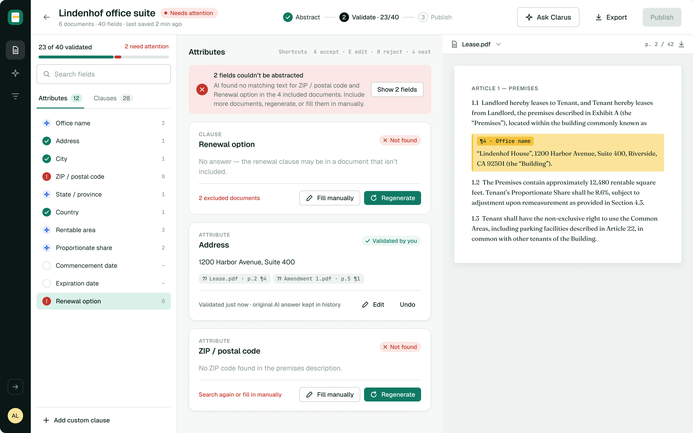
When the AI can't find a field, the lease is marked Needs attention and the card offers two ways forward: fill it in by hand or regenerate.
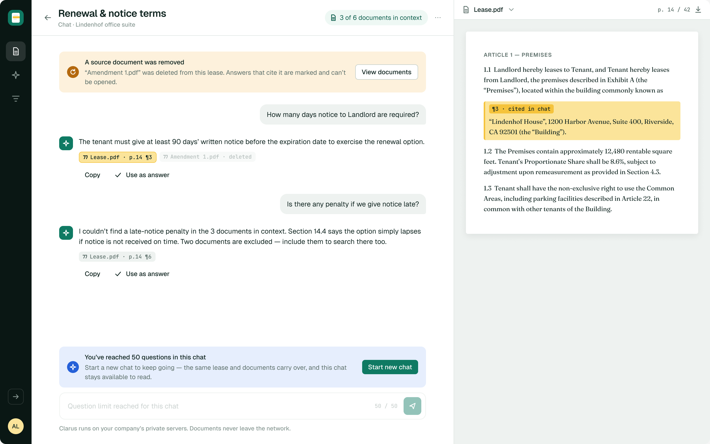
If a cited document is deleted, its chips turn grey instead of breaking. When a chat reaches its question limit, the composer is disabled and a new chat is one click away.
Clarus is Latin for "clear". The mark is a page with one highlighted line, the product's promise in a single shape: every answer points to a place in the source. Pine green stands for validated work; marker yellow is used only for citations and highlighted text.
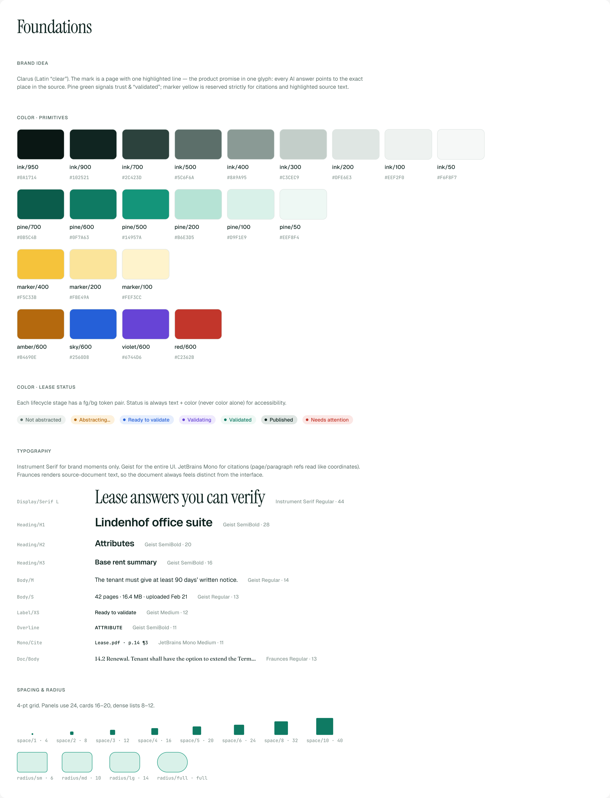
Colour primitives and semantic tokens, one colour pair per lease status, four typefaces with clear jobs and a 4 pt spacing scale.
Every status is a labelled badge with its own colour pair. Colour supports the label; it never carries the meaning alone.
Geist for the interface, a serif for the lease text so the document reads apart from the UI, and a mono face for citations, which read like coordinates.
Components use semantic tokens such as text/secondary or status/validating, aliased to primitives, so one change updates every screen.
Buttons have default, hover, pressed, focus and disabled states, and the sidebar has collapsed and expanded versions.
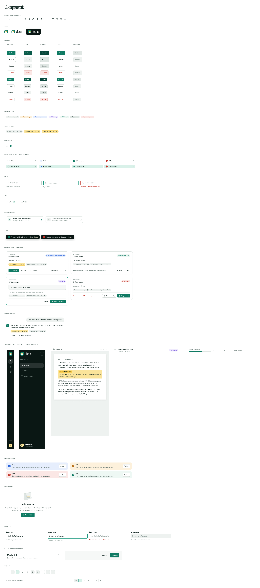
From citation chips and answer cards to the sidebar, banners, modals and pagination, all on the same tokens.
Success was measured on user satisfaction and on business impact. The project's numbers aren't shown here, so this section lists what was tracked, not before-and-after figures.
Speed
Time to answer
Time spent searching and analysing documents, and how fast leases moved through abstraction and validation.
Quality
Accuracy & citations
Answer accuracy and citation quality, checked by hand on a sample against the actual lease text.
Trust
Correction rate
How often users edited or rejected an answer, showing where search, extraction or the display of sources needed work.
Adoption
Usage over time
Adoption, how often the tool was used and how many documents went through it.
The hardest part wasn't the interface. It was holding a lot of product logic together and keeping it simple for someone who just wants to know what the lease says, and where it says it.